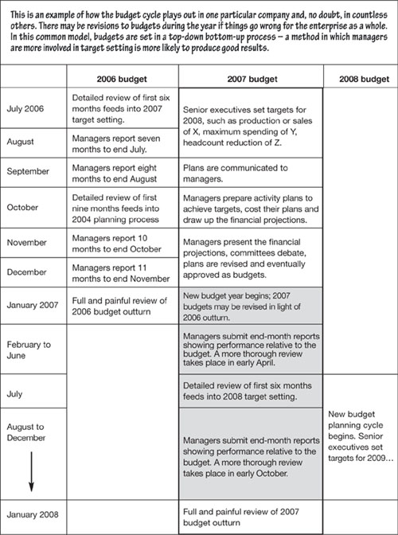
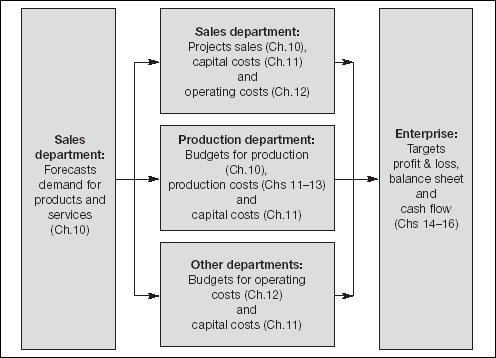
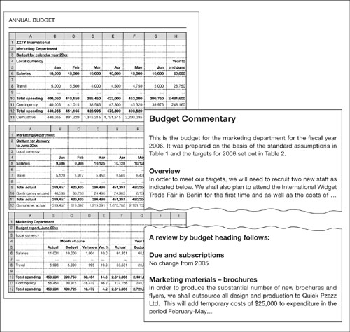
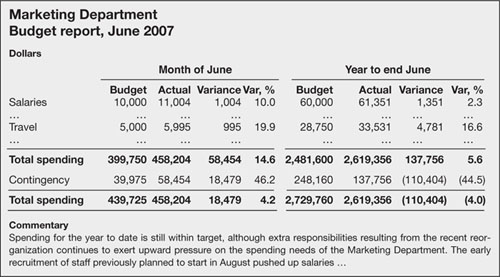
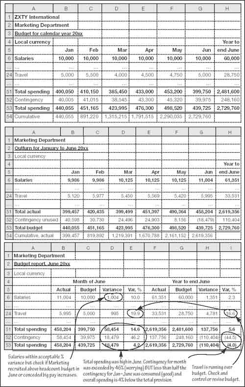
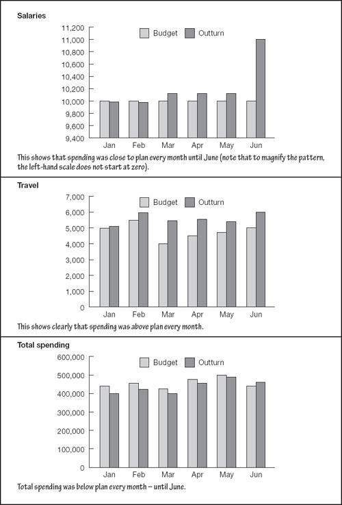

The budget bane
Budgets can be the bane of any manager’s life. It always seems to be time to prepare next year’s budget, report on progress or attend a meeting on some aspect of budgeting. Yet if you put a structure in place and get on top of the budget process, it can be quite simple and – dare I suggest – a useful exercise for all concerned. I suppose mentioning that it might become a pleasure would be going too far.
This chapter is written from the assumption that you are preparing a budget as part of a larger, probably enterprise-wide budgeting exercise. If it happens that you are in charge of the overall budget process, just read the following from that perspective.
Budgets, right or wrong
Budgets are simply short-term financial plans. They usually cover a 12-month period, although rolling budgets with no hard and fast start and end points are better. The best budget plans also contain at least a page or two of written explanation. (See, for example, Fig. 22.2.) Once approved, the plans become a summary of expected activity, a tool for management control, and a target against which performance is measured. This is where the problems arise.
These spending plans become limits – floors and, especially, ceilings. Managers can usually get away with some undershooting on expenditure, but overshooting is often a heinous crime. This conflicts directly with the best performance metrics, which should stretch the organization and encourage growth. Accordingly, it is important to maintain a common-sense approach to budgets and keep the good of the enterprise foremost in your thinking. Budget figures should not be taken in isolation. A balanced scorecard approach is required (see overleaf).
‘Most of what we call management consists of making it difficult for people to get their work done.’
—Peter F. Drucker
An overview of the budget process
Budgets typically run in an overlapping 18-month cycle, with the targets covering 12 months – frequently a calendar year. See Fig. 22.1.
Fig 22.1. The budget cycle
Generally, senior executives set targets, preferably in a two-way consultation with managers (top-down, bottom-up). From these targets, operating plans are devised and financial projections are developed. There may well be a couple of rounds of, shall I say, negotiation and revisions before the plans are approved. The financial plans then become budgets.
Managers are usually required to report on progress at the end of each month, comparing actual spending (often called outturn) with the budget targets. Beanies term this process the analysis of variance to highlight the fact that they come from a different planet. There will probably be more detailed and more painful reviews every three months. Then, when the budget year has ended, there will be an extensive post-mortem. If you have ever been involved in a project or budget, there is no need to elaborate on the witch hunts that follow missed targets and the chocolate beans that are handed out in reward when targets are met.
Given that targets usually affect salaries and bonuses, and these figures themselves go into budgets, goals are frequently set for a 12-month period which is slightly ahead of the budget year. For example, when the budget year runs from January to December, a manager may be rewarded (or punished) for his performance over the 12 months to the end of October or November.
‘Dozens of times I have asked CEOs and other corporate leaders how they stay on top of their large, complex businesses: “How do you know what’s really going on in your company?” Invariably, I receive the clear answer that they have five or six – maybe 10 or 12 – key business indicators that they track daily or weekly. These indicators tell them what they need to know about their company’s current performance and near-term prospects. Without notes or preparation, most CEOs can tell you in just a few minutes exactly what these indicators are and what the current numbers are telling them.’
—Peter R. Fisher, US Under Secretary of the Treasury
(speaking to the Securities Industry Association, 8 November 2002)
Who prepares the budgets?
Usually each department head or business unit manager with spending responsibility prepares a budget. When all these separate budgets are aggregated, they will create a spending plan for the enterprise as a whole. For ease of reference, let me refer to departments, but treat this term as interchangeable with the enterprise, division or business unit.
Of course, the department head’s own budget may be created by aggregating budgets which were prepared by subordinate managers. The budgeting process can – and probably should – ripple deeply into the organization. There is inevitably an element of centralization in bringing together the plan, but watch that central planning per se takes the initiative away from the individual manager and can be demoralizing and damaging.
Memo
Please attend the first budget meeting for 2007 in the main conference room at 14.00 on 27 August. Preliminary briefing material is attached, containing background material on the planning process and timetable, proposed roles and responsibilities, and provisional assumptions and targets. This should be read in conjunction with your copy of the five-year strategic plans ... |
AgendaAnnual budget kick-off meeting, 27 August 2006
|
Minutes
|
Consistency
It hardly needs to be said that budgets need to be consistent across the organization.
First, each budget must be prepared using the same expectations and assumptions. It would be rather pointless if Sales worked on the basis that some wonder product would go into the shops in July, while Manufacturing did not plan to start production until October. Similarly, you do not want the inconsistency of departments using differing exchange rates, interest rates or economic forecasts.
Second, the headings on the financial budgets need to be consistent so that they can be aggregated. Essentially, you want a standard spreadsheet (a budget pro forma if you want to make it sound needlessly outdated and unfriendly).
If you are in charge of the overall budget process, you will want to produce and circulate a list of assumptions, a spreadsheet with instructions for completion, and maybe a standard framework for commentary.
Memo
Attached please find:
You are required to complete... |
Setting assumptions and targets
Assumptions and targets for next year (the budget year) are usually set about halfway through this year, although they may be revised before or even during the budget year. The overall performance of the enterprise, and of individual departmental managers, will influence the new goals and objectives. It hardly needs to be said that those setting the standards need to stand back and see the big picture. If you want to explore this topic further, you might want to read The Definitive Business Plan (2006, revised edition, FT Prentice Hall), another one of my books.
Cynical managers sometimes use zero-based budgeting. Essentially last year’s figures are hidden and you have to draw up a budget from scratch. Might this be helpful? It does highlight that there can be benefits in asking hard questions such as ‘Just because we are already spending this much on that, does it make it right?’
Ideally, all department heads should be involved in developing the strategic plans and then setting assumptions and collective targets. The individuals involved will be more likely to understand and support these parameters. Personal targets may be a more private matter. If you are a department head conveying the parameters to your subordinates you have a more difficult job ensuring their buy-in. Perhaps you can involve them when you are preparing your input before the targets and assumptions are set.
Developing spending plans
Once the targets and assumptions are agreed, they should be communicated in writing to department heads. Converting these into financial plans has been covered already (see Chapters 11 to 16). You may be relieved to know that if you drew up your own projections as you worked through the previous chapters you already know all about the forecasting and projecting associated with budgeting. The tables that you produce will take one of four forms, depending on what you do:
Sales. The sales department will also produce a sales budget, which will look something like an extract from Fig. 13.6.
Financial statements. All the above will be brought together in a budget at the divisional or enterprise level that follows Figs 14.2, 15.4 and 16.3.
In fact, smaller companies, subsidiaries and business units will more or less go straight to step four, although of course this will contain all the elements of the other three categories.
‘It is a bad plan that admits of no modification.’
—Publilius Syrus
One forecast, four budget formats

Flexible budgets
Production departments and, sometimes, other cost centres, often produce several budgets each based on a different level of production and sales. If in the event demand in, say, June is for 1.5 million units, the budget based on that level of activity will be the one that is used in that month for management control and measurement.
Cash or accruals?
Cash budgets or cash flow budgets contain spending and revenue projections on a cash basis. They are relatively simple to draw up and they provide an essential bottom line for treasury (cash) managers. However, budgets produced on an accruals basis provide superior management information. Accordingly, it is most useful to:
produce budgets on an accruals basis (see Chapter 8), and then
generate cash flow projections (see Chapters 8 and 16).
Capital budgets
For some reason, capital budgeting sounds more terrifying than budgeting. In fact, it is easier to draw up a capital budget, because the number of items involved is usually relatively small.
A capital budget is little more than a list of the fixed assets (computers, desks, earth-moving equipment) that you need to acquire during the coming year. Unless you are preparing a purely cash budget, you will have to draw up a depreciation schedule, at least for the first few months, so that you can include depreciation in the production or operating expenditure budgets.
Given that the acquisition of fixed assets often involves spending relatively large sums of money, it receives special attention often on a case-by-case basis. If you need to evaluate or justify the spending, some additional techniques are described in the next chapter.
|
Commentary
Usually you will need to document the financials, although curiously I have seen organizations where financials were compiled by accountants who wanted the figures, not the rationale. Brevity is usually welcome, as long as you explain the key points. Put yourself in the position of the reader. See Getting it approved in this chapter.
Presentation, revision and approval
Be prepared to explain and defend your budget plans to a committee. If you are in a large or formal organization, and near the top of the budget process, you may need to make a PowerPoint or at least a whiteboard presentation. Otherwise, perhaps you will talk your colleagues through your written report. In either case, explaining the whats, whys and hows should take you through the process fairly smoothly.
Invariably, at first brush, there will be conflicting departmental activities, or aggregate spending will be too high, or the overall corporate plan will not be ambitious enough, or too ambitious, or whatever. Be prepared to revisit and revise your plan. Budgets frequently contain padding – room to make cuts up front if required or wriggle if the year turns out to be worse than expected. Watch for this in budgets passed up to you and, I guess, try to avoid doing it yourself. It is better to grade activities according to how essential they are – and to start cutting with the least essential if necessary.
Getting it approved
|
|
|
|
|
Fig 22.2. A live budget
Beanies tend to use the words outturn as shorthand for ‘actual’ or ‘this is what happened’ and variance for the difference between what was expected and what actually happened. The terrifying sounding term analysis of variance is nothing more complex than a review of actual against plan.
Managing a budget
Once the budget year is in full swing, each month you will be required to produce a summary comparing what did happen with what you expected to happen, and write a short commentary explaining the difference between the two (the variance, to use a word beloved of bean counters). It will be a rare budget that is spot on target all year. An extract from a monthly report is as follows:
In fact, the manager responsible for this budget tracks it in a workbook containing three spreadsheets (see Fig. 22.3):
The first spreadsheet is the original budget – what was planned.
The second shows the actual transactions (the outturn) – what happened.
The third analyses the variances – where the reality diverged from the plan.
Fig 22.3. Sample monthly budget health check
The third spreadsheet was used to produce the report above. It shows planned and actual spending in the month, together with the actual and percentage variance between the two. It also does the same for the year to date – the first six months in this example.
The three rows – salaries, travel and total spending – are illustrated graphically in Fig. 22.4. With such pictures, it is easy to spot what is happening. You can read the same information from the budget report (the lower spreadsheet). Taking each in turn:
Salaries. Salaries were close to budget each month until June. Over the first six months they were just 2.3% above plan and even in June itself they were within what might be regarded as a reasonable margin of error – 10%. However, the sudden jump in June suggests an unexpected event – perhaps across-the-board pay awards or recruitment of an extra member of staff. This merits investigation.
Travel. The percentage variances show that travel spending is running seriously over budget and needs investigation. Looking back at the raw data there is persistent overspending that should have been questioned already.
Total spending. The summary shows that total expenditure in the year to June was 5.6% over the level of identified planned spending, but still within the overall plan including the 10% contingency. Spending in the month of June was over target.
Fig 22.4. Budget and outturn illustrated
What does all this tell us? It indicates that percentages are more revealing than raw numbers. It shows that many questions can be raised by a quick perusal of the budget report. It highlights the fact that more information is needed. It is, incidentally, valuable to include volume figures – such as planned and actual headcount, number of units produced or sold, volume of inventory, number of contracts completed. Most important, you cannot make any decision without looking at both the spending and the revenue side of the equation.
Watch for spending binges at near year end, when managers realize that expenditure is running under-budget and go on unnecessary spending sprees.
If the extra spending is going into generating more sales it might be entirely acceptable and welcome. However, recall from Chapter 10 that it can sometimes be counterproductive if sales exceed their optimum level.
|
|
| As mentioned elsewhere, keep a close eye on trends, and especially trends in trends. Even if spending is well below target, if it is getting a little closer to the limit each month, this might indicate that it is on an almost irreversible slippery path towards an overshoot. |
When things go wrong
There is perhaps nothing more common or more irritating than a boss who is hung up on spending figures. Overall performance should be more important than hitting a budget. And results are not usually measured by whether you are or should be spending $100 or $200 on telephone calls. So, as already indicated, take spending with revenue – and look at this in the light of overall objectives and constraints.
If spending is running over budget (or sales are down) this is when you will be pleased that you graded activities according to how significant they were in the overall scheme of things. You do not need to be told that the least essential items should be the first to be cut.
|
The big review
Quarterly and end-year budget reviews should not go unmentioned. They should be essentially the same as every other monthly review. The quarterly reviews might provide an occasion for a little more brainstorming about what is happening and why. The end-year review is a good time to look back at the previous budget cycle and budget year. Ask what you can learn from events to make the next budget better still.